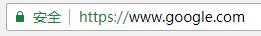
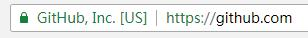

获取证书
升级到https的第一步就是要先获取一张证书。
证书是一个二进制文件，里面包含经过认证的网站公钥和一些元数据，要从经销商购买。
证书的概念
- 证书的概念：首先要有一个根证书，然后用根证书来签发服务器证书和客户证书。服务器证书和客户证书是平级关系。SSL必须安装 服务器证书来认证。 因此，在此环境中，至少必须有三个证书：根证书，服务器证书，客户端证书。 在生成证书之前，一般会有一个私钥，同时用私钥生成证书请求，再利用证书服务器的根证来签发证书。 SSL所使用的证书可以自己生成，也可以通过一个商业性CA（如Verisign 或 Thawte）签署证书。
- 签发证书的问题：如果使用的是商业证书，具体的签署方法请查看相关销售商的说明；如果是知己签发的证书，可以使用openssl自带的CA.sh 脚本工具。
认证级别
证书有很多类型，分为三种认证级别：
- 域名认证（Domain Validation）：最低级别认证，可以确认申请人拥有这个域名。对于这种证书，浏览器会在地址栏显示一把锁。
- 公司认证（Company Validation）：确认域名所有人是哪一家公司，证书里面会包含公司信息。
- 扩展认证（Extended Validation）：最高级别的认证，浏览器地址栏会显示公司名。
域名认证：

公司认证/扩展认证：

覆盖范围
- 单域名证书：只能用于单一域名，google.com的证书不能用于www.google.com
- 通配符证书：可以用于某个域名及其所有一级子域名，比如*.google.com的证书可以用于google.com，也可以用于www.google.com
- 多域名证书：可以用于多个域名，比如google.com和github.com
认证级别越高覆盖范围越广，价格越美丽。
还有一个免费证书的选择。由 ISRG（Internet Security Research Group，互联网安全研究小组）提供服务，而 ISRG 是来自于美国加利福尼亚州的一个公益组织。Let’s Encrypt 得到了 Mozilla、Cisco、Akamai、Electronic Frontier Foundation 和 Chrome 等众多公司和机构的支持，发展十分迅猛。
拿到证书以后，可以用 SSL Certificate Check 检查一下，信息是否正确。
安装证书
根据上面的介绍，证书会有多个文件，可以统一放到你的web服务器路径/cert/(linux OS，windows看你自己心情了)下面，然后根据你web服务器的不同在下面的链接中选择适合你的配置：
- https://mozilla.github.io/server-side-tls/ssl-config-generator/ Mozilla的证书配置文件模板
- https://github.com/SSLMate/tlsconfigguide/tree/master/templates SSLMate的证书配置文件模板
如果使用 Let’s Encrypt 证书，请使用自动安装工具 Certbot
安装成功后，使用 SSL Labs Server Test 检查一下证书是否生效。
Nginx的写法
在Nginx的安装目录下创建cert目录，并且将下载的全部文件拷贝到cert目录中。如果申请证书时是自己创建的CSR文件，请将对应的私钥文件放到cert目录下并且命名为214750710900222.key
打开 Nginx 安装目录下 conf 目录中的 nginx.conf 文件，找到：
1 | # HTTPS server |
将其修改为 (以下属性中ssl开头的属性与证书配置有直接关系，其它属性请结合自己的实际情况复制或调整) :
1 | server { |
保存退出。
重启 Nginx。
nginx -s reload
通过 https 方式访问您的站点，测试站点证书的安装配置。
Apache的写法
在Apache的安装目录下创建cert目录，并且将下载的全部文件拷贝到cert目录中。如果申请证书时是自己创建的CSR文件，请将对应的私钥文件放到cert目录下并且命名为214750710900222.key；
打开 apache 安装目录下 conf 目录中的 httpd.conf 文件，找到以下内容并去掉“#”：
1 | #LoadModule ssl_module modules/mod_ssl.so (如果找不到请确认是否编译过 openssl 插件) |
打开 apache 安装目录下 conf/extra/httpd-ssl.conf 文件 (也可能是conf.d/ssl.conf，与操作系统及安装方式有关)， 在配置文件中查找以下配置语句(一定要写进
1 | # 添加 SSL 协议支持协议，去掉不安全的协议 |
重启 Apache。
通过 https 方式访问您的站点,测试站点证书的安装配置
参考
1.http://www.ruanyifeng.com/blog/2016/08/migrate-from-http-to-https.html
2.https://imququ.com/post/letsencrypt-certificate.html